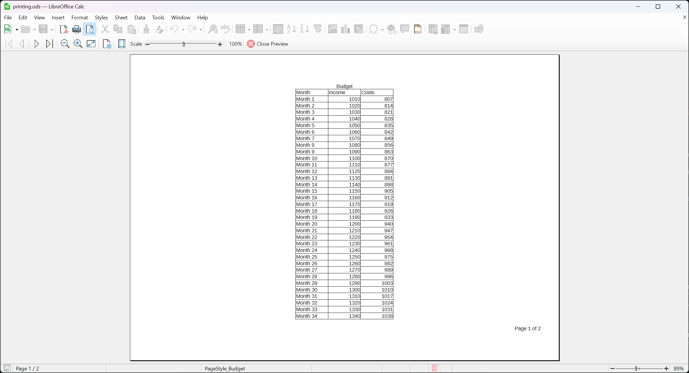

Page setup and printing
These set what LibreOffice's Format ▸ Page Style and Format ▸ Print Ranges set.
using OpenDocumentSpreadsheets
xf = newods("Budget")
sh = xf["Budget"]
sh["A1:C1"] = ["Month" "Income" "Costs"]
for i in 1:60
sh[i+1, 1] = "Month $i"; sh[i+1, 2] = 1000 + 10i; sh[i+1, 3] = 800 + 7i
end
setPageSetup(sh; orientation = :landscape, paperSize = :A4, fitToWidth = 1, fitToHeight = 0)
setPageMargins(sh; left = 0.5, right = 0.5, top = 0.75, bottom = 0.75) # in inches
setPrintOptions(sh; gridLines = true, horizontalCentered = true)
setPrintArea(sh, "A1:C61")
setPrintTitles(sh; rows = 1) # repeated on every page
setHeaderFooter(sh; header = (center = "&A",), footer = (right = "Page &P of &N",))<!– shot: printing preview –>

Headers and footers
Header and footer text takes codes for fields and fonts, stored as LibreOffice's fields and text styles:
| Code | |
|---|---|
&P, &N | the page number, the number of pages |
&D, &T | the date, the time |
&A, &F | the sheet's name, the file's name |
&B, &I, &U, &"Font,Bold", &12 | bold, italic, underline, a font, a size |
headerFooterFont and headerFooterField build them:
setHeaderFooter(sh; header = headerFooterFont(bold = true) * "Budget " * headerFooterField(:date))Page styles
Each sheet's settings go into a page style of its own (PageStyle_<sheet>), which Format ▸ Page Style edits, so changing one sheet leaves the others alone. A sheet without one prints LibreOffice's default header and footer, and getHeaderFooter says so.
- Paper:
paperSizetakes the common sizes (:A4,:letter, …), andpaperWidthandpaperHeightany other, in cm unlessunitsays otherwise. - Units: margins are in inches, paper sizes in cm; Units lists them all.
- Scaling:
fitToWidthandfitToHeightfit the print to pages across and down, andscaleToPagesfits it to a number of pages in all. - Print titles must lie inside a group or apart from it.